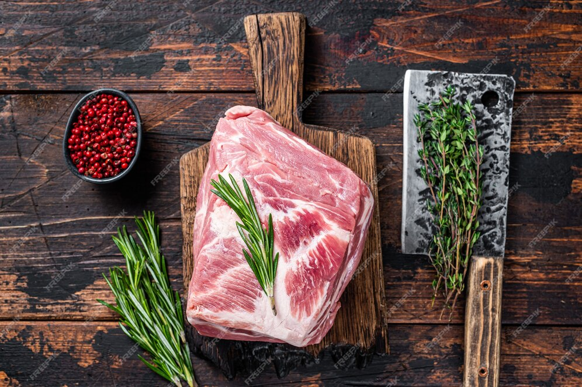

Recetas para los amantes de la comida casera
Bondiola al Disco
🧑🏽🍳 Hoy te enseñamos a cocinar la Bondiola al Disco y sus infinitas maneras de saborearla.
Al preprarla de esta forma, podemos difrutar de muchas maneras, por ejemplos en la forma tradicional con pude de papa y batata, en forma de sandwiches (hay que dejarla un tiempo mas de coccion), tambien podemos usar como relleno de unos exelentes sorrentinos de remolacha!
La opciones de preprarla son gigantescas al igual que su sabor unico y delicioso.